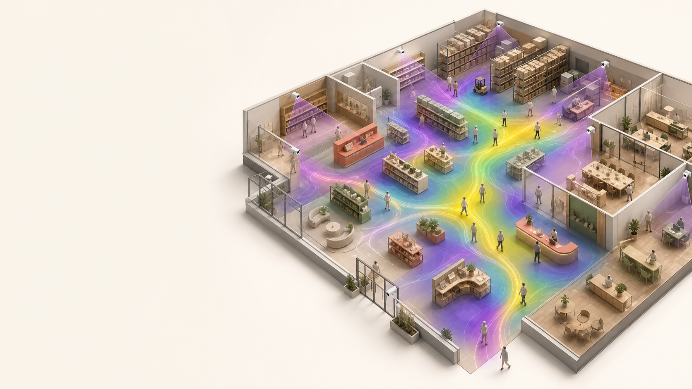
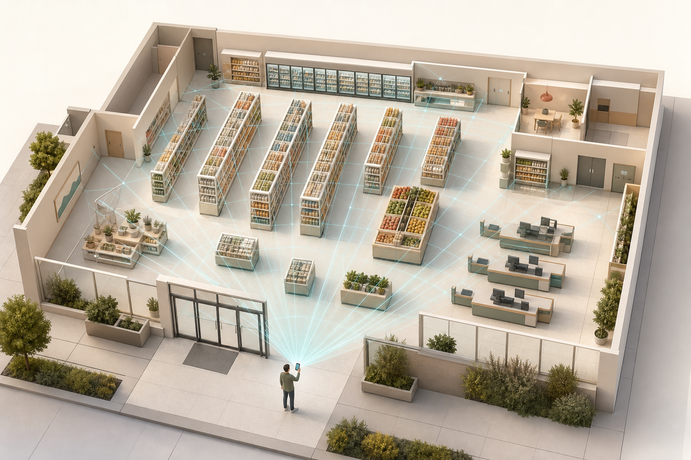
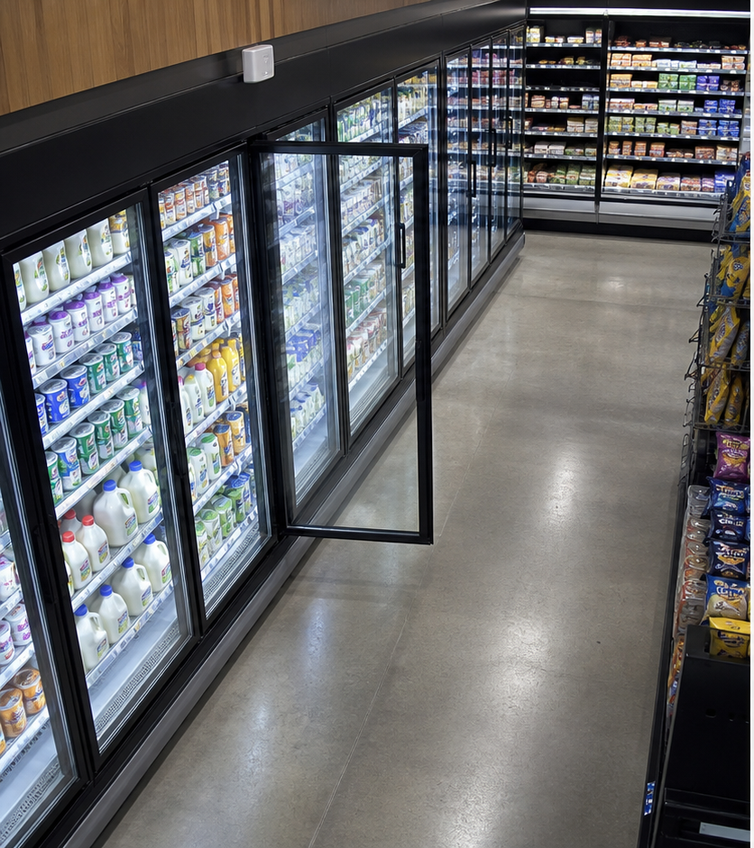
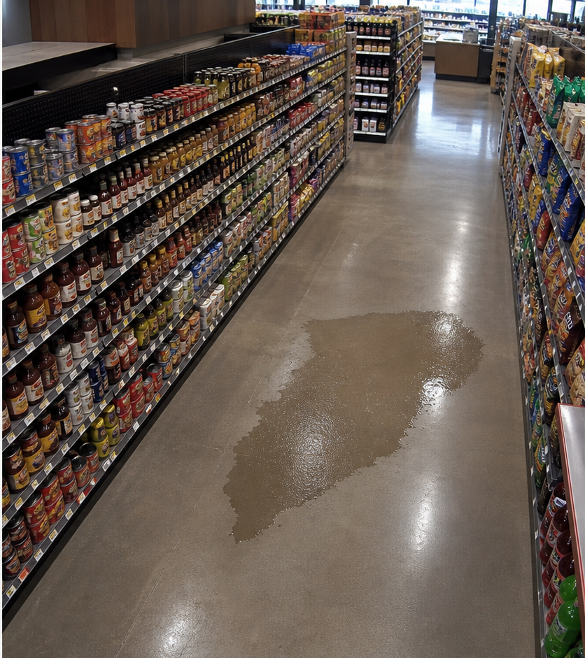
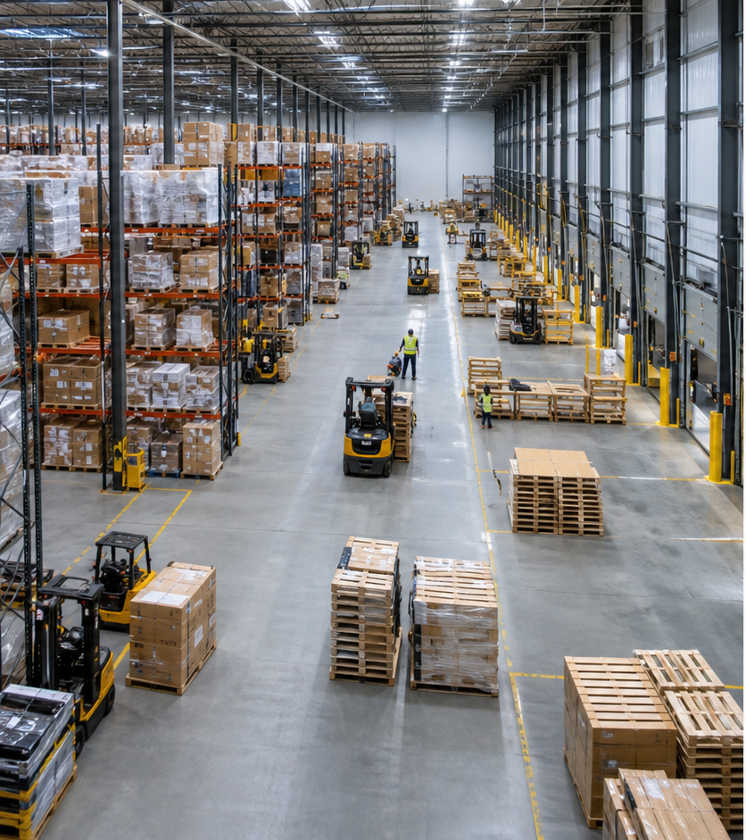
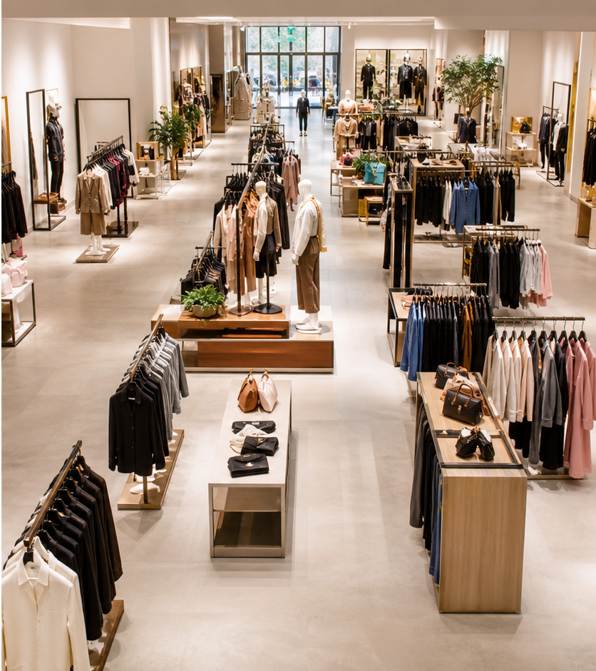

AI-NATIVE SPATIAL INTELLIGENCE
Understand every physical space.
ManySight turns mapped environments and camera observations into live operations, explainable insights, and custom AI models.
DigitizeObserveUnderstandTrain

ManySight
PROJECTMarket Central
Space setup
STORE ONBOARDING
Build the spatial model
2 of 3 complete
✓
SCAN COMPLETE
Your store is ready.
The walkthrough produced a clean shell, fixtures, seven operating zones and a coordinate system for the cameras.
1,286 m²mapped area
96%scan coverage
07zones found

CAMERA SOURCES
Six cameras are aligned.
Select a source to inspect its calibration and store coverage.
6 / 6 cameras calibratedScene v1
ManySight
PROJECTMarket Central
Live analysis
STORE ANALYSIS
Tuesday, 14 July
REVENUE TODAYCA by hour
+8.7%CUSTOMER MIXVisits by segment
2,418customers
New44%
Returning39%
Loyalty17%
ZONE FLOWWhere customers went next
2,418 entries34%Entry → Zone A
29%Zone A → Checkout 1
18%Fresh → Checkout 2
Illustrative demo data
STORE HEATMAPCustomer activity by zone
Last 60 minutesFresh zone
Zone A
Zone B
Checkout 1
Checkout 2
Entry
Exit
More activity
QUEUE PRESSUREPeople waiting by checkout
Checkout 1Checkout 2Review threshold · 7
Illustrative demo data
LowHigh
Store activityLowHigh
ManySight
PROJECTMarket Central
Live now
LIVE STORE
The store, right now
Updating continuously14:32:18
Individual live trackCamera onlineNo historical aggregation
ManySight
PROJECTMarket Central
Annotation ready
HUMAN-IN-THE-LOOP DATA
Turn real moments into training data
Anyone on site can save the right frame while the event is still visible.
09:41● ● ●
ANNOTATESave a useful frame

LIVEWHAT DO YOU SEE?
SourceCAM-02 · Fresh cabinetsFrame qualitySharp · 1080p
Only this selected frame is retained.
SIMPLE BY DESIGN
The person who sees the event labels it in seconds.
No annotation workstation is required. Choose the camera, name what happened, and save one traceable frame.

wet_floorCAM-05CURATED DATASET
Every frame stays searchable by label and camera
fridge_openCAM-02 · 14:32:18.420
Reviewedwet_floorCAM-05 · 14:29:04.112
Newfridge_openCAM-02 · 13:48:51.906
Reviewedwet_floorCAM-05 · 12:15:33.284
Reviewedfridge_openCAM-02 · 11:42:20.771
Reviewedwet_floorCAM-05 · 10:08:16.039
ReviewedManySight
AGENT INTERFACEMCP + Docs
Tools discoverable
AGENT-NATIVE PLATFORM
Talk to your spatial data.
Ask a question, run a model, or create a training workflow from one place.
ManySight Agent Workspace connected
MCP readyHow many customers visited between 2pm and 4pm?
M642 customersVerified
I queried distinct tracked visits in the selected interval across all entrance cameras.
14:00
14:30
15:00
15:30
16:00
Ask ManySight about this workspace…
SIMPLE INTERFACE
One conversation.
Three jobs.
The agent discovers the platform contract and takes the required actions.
STARTagent.md→ACTMCP→REFERENCEDocs
Ask about insightsTime, zones, classes, cameras.
Run a custom modelLaunch workers and publish results.
Train from labeled dataExtract, fine-tune, evaluate, deploy.
Every answer stays traceable.
Sources, time range, camera scope, and model provenance are included.
Understand requestQuery analyticsReturn evidence
ManySight
SPATIAL RECOMMENDATIONSAccessibility benchmark
Agent review complete
AGENTIC SPATIAL REASONING
Ask the model what should change.
The agent audits the geometry, explains every constraint, and proposes a better layout using spatial rules and observed behavior.
CURRENT MODEL · ACCESSIBILITY OVERLAYThree points interrupt the route
62 / 100Continuous routeTurning clearanceConstraint
Audit overlayDrag to orbit · Scroll to zoom
ManySight
ONE SPATIAL INTELLIGENCE COREBEYOND A SINGLE VERTICAL
Different spaces need different models—not different platforms.
The same digital twin, data loop, and agent interface adapt to the business question that matters.

WAREHOUSES
Custom models become operational infrastructure.
Train for the exact pallets, hazards, equipment, and workflows unique to each site.
Pallet stateForklift proximityDamage & spills

FASHION RETAIL
Impressions reveal which designs earn attention.
Connect visual merchandising to real engagement around every rack and display.
Garment impressionsDwell by displayPath to purchase
SCAN THE SPACE→CALIBRATE CAMERAS→OBSERVE→CURATE DATA→TRAIN & IMPROVE
A reusable spatial data foundation. Domain intelligence is added as models and insights.